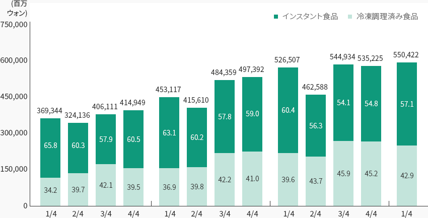
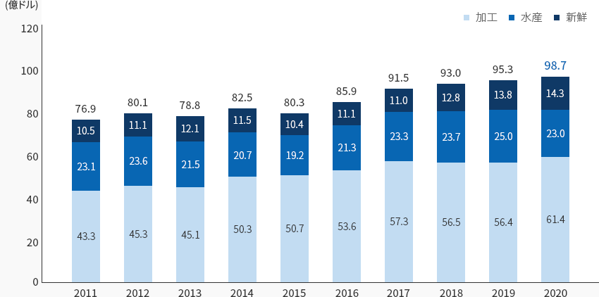
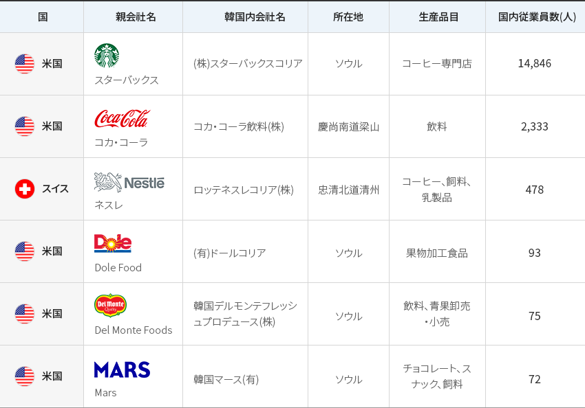
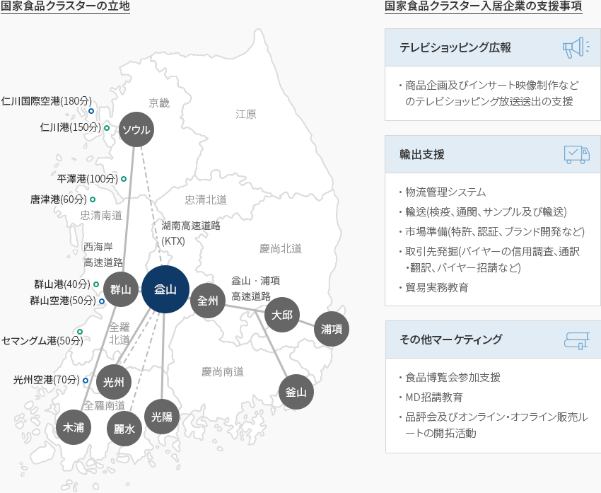

食品
- Home
- Why KOREA
- 産業
- 食品
食品
Food
-
世界的に高まる 韓国加工食品の評判 コンテンツを閉じる世界的に高まる 韓国加工食品の評判韓国の食品市場は1,287億ドル規模(2019年基準)でグローバル食品市場の1.9%水準であるが、
最近、中国及びASEANなど新興国市場の成長や韓国の加工食品に対するグローバル需要の拡大によって
急速に輸出が増加し、成長基調を維持している。東南アジア及び中華圏市場を中心とした韓国産加工食品の高い需要と地政学的な立地条件などを
基に韓国の食品産業は内需中心から輸出の割合が徐々に増え、産業の規模が持続的に拡大している。食品業界は積極的な海外進出や輸出増加、高付加価値製品中心の輸出構造、自由貿易協定の拡大、海外企業との
積極的な提携拡大などにより成長を続けている。最近は一人暮らしの増加など人口構造の変化に積極的に対応し、多様な需要に応えるための新製品の開発が活発化している。
コロナ禍をきっかけに非対面流通チャネルが拡大したことでHMR(ホーム・ミール・リプレイスメント:調理済み食品)は食品産業の新しい成長動力として位置づけられている。「HMRの四半期別販売現況」(単位 : 百万ウォン, %)HMRの四半期別販売現況 四半期, 計 四半 インスタント食品 冷凍調理済み食品 計 1/4 65.8 34.2 369,344 2/4 60.3 39.7 324,136 3/4 57.9 42.1 406,111 4/4 60.5 39.5 414,949 1/4 63.1 36.9 453,117 2/4 60.2 39.8 415,610 3/4 57.8 42.2 484,359 4/4 59.0 41.0 497,392 1/4 60.4 39.6 526,507 2/4 56.3 43.7 462,588 3/4 54.1 45.9 544,934 4/4 54.8 45.2 535,225 1/4 57.1 42.9 550,422  ※ 資料 : 農林畜産食品部·韓国農漁村食品流通公社(2020)、「2019加工食品細分市場の現況-調理済み食品市場」
※ 資料 : 農林畜産食品部·韓国農漁村食品流通公社(2020)、「2019加工食品細分市場の現況-調理済み食品市場」 -
食品産業 安定成長を維持 コンテンツを開く食品産業 安定成長を維持韓国の食品産業(食料品+飲料)は1970年代以降、経済成長と家計の消費支出の拡大に後押しされ、持続的に成長しており、
生産規模は96.5兆ウォン(2019年基準)で2007年以降年平均5.9%の成長を維持してきた。
これは同期間の製造業(4.2%)に比べて高い水準である。製造業に占める食品産業の割合も着実に増加し、
企業数、生産額、付加価値はともに2007年に比べて増加している。「HMRの四半期別販売の現況」(単位: 社、10億ウォン、 %)HMRの四半期別販売の現況 2007, 2016, 2019, CAGR(‘07→’19) 2007 2016 2019 CAGR
(‘07→’19)企業数 社 4,257 5,274 5,797 2.6% 製造業比(%) 6.9 7.7 8.3 生産額 10億ウォン 48,727 86,682 96,500 5.9 製造業比(%) 5.1 6.1 6.2 付加価値 10億ウォン 19,473 32,125 35,904 5.2 製造業比(%) 5.9 6.5 6.4 ※ 資料: 統計庁鉱業製造業調査2020年基準で韓国の加工食品の輸出規模は61.4億ドルで、農水産食品の輸出総額の62.2%を占める。「加工食品の輸出推移」加工食品の輸出推移 年度, 加工, 水産, 新鮮 区分 2011 2012 2013 2014 2015 2016 2017 2018 2019 2020 加工 43.3 45.4 45.2 50.3 50.7 53.6 57.3 56.5 56.4 61.4 水産 23.1 23.6 21.5 20.7 19.2 21.3 23.3 23.7 25.0 23.0 新鮮 10.5 11.1 12.1 11.5 10.4 11.1 11.0 12.8 13.8 14.3 計 76.9 80.1 78.8 82.5 80.3 85.9 91.5 93.0 95.3 98.7
※ 資料: 農林畜産食品部(2020)、「農林水産食品の輸出入動向及び統計」中国、米国、ASEANなどの主要輸出市場での韓国産加工食品の需要が堅調な中、コロナ禍などによる
간편HMRの需要増に支えられ輸出規模は着実に増加(2010年以降年平均6.8%増加)しており、菓子類、麺類などの従来の主要輸出品とと
もにソース類に対するグローバル需要が拡大したことから加工食品全体の輸出が増加した。「品目別加工食品の輸出推移」(単位 : 千ドル, %)品目別加工食品の輸出推移 2019, 2020, 増減 2019 2020 増減 菓子類 440,895 518,713 17.6 麺類 612,041 792,255 29.4 飲料 421,997 410,420 △ 2.7 酒類 383,739 323,337 △ 15.7 コーヒー類 274,320 278,561 1.5 ソース類 255,872 318,762 24.6 ※ 資料: 農林畜産食品部(2020)、「農林水産食品輸出入の動向及び統計」 -
グローバル市場の 魅力的なテスト市場 コンテンツを開くグローバル市場の 魅力的なテスト市場스スターバックスコリアはスターバックスとイーマートの合弁法人(スターバックス32.5%、イーマート67.5%)で
スターバックス進出国の中でも代表的な成功例である。1999年に梨花女子大学前に1号店をオープンして以来、2016年に売上規模
1兆ウォン以上を達成しており、2018年の売上及び利益の水準は2017年に比べてそれぞれ20%と24.8%増加した。ネスレコリアは1979年、合弁会社の形で韓国に進出して以来、テイスターズチョイス、ネスカフェ、コーヒーメイト、ネスクイックなど
グローバル人気製品を韓国人の好みに合わせて積極的にローカリゼーションし、食品市場のトレンドを主導している。ネスレは現地調査及び本社の研究開発チームとの緊密な協力を通じて現地の消費者の味に対する好みや特性を把握して
カスタマイズ型製品を提供しており、現地雇用のスタッフ、現地市場の環境に合わせたマーケティング、
年中行事などの固有文化をプロモーションに利用するなど、積極的なローカリゼーションを行っている。
また、農心(ノンシム)、韓国コカ・コーラ、斗山、南陽乳業など韓国内の流通網を有する企業との積極的な提携を通じて
販売ルートを開拓し、流通網を確保している。韓国進出のグローバル食品企業 国, 親会社名, 韓国内会社名, 所在地, 生産品目, 国内従業員数(人) 国 親会社名 韓国内会社名 所在地 生産品目 国内従業員数(人) 米国 スターバックス (株)スターバックスコリア ソウル コーヒー専門店 14,846 米国 コカ・コーラ コカ・コーラ飲料(株) 慶尚南道梁山 飲料 2,333 スイス ネスレ ロッテネスレコリア(株) 忠清北道清州 コーヒー、飼料、乳製品 478 米国 Dole Food (有)ドールコリア ソウル 果物加工食品 93 米国 Del Monte Foods 韓国デルモンテフレッシュプロデュース(株) ソウル 飲料、青果卸売・小売 75 米国 Mars 韓国マース(有) ソウル チョコレート、スナック、飼料 72
※ 出所 : 農水産食品流通公社食品産業統計情報(aT FIS)
※ 注 : 韓国内従業員数は2018年基準 -
未来の有望分野を中心に 食品産業生態系を高度化 コンテンツを開く未来の有望分野を中心に 食品産業生態系を高度化韓国の農林畜産食品部は第3次食品産業振興基本計画を通じて食品産業の革新生態系を造成し、
未来産業への躍進を図るために5大政策分野と細部課題を選定した。これと関連し、HMR、
高齢者向け食品、機能性食品など有望分野を積極的に育成し、食品産業クラスターの活性化に向けて2022年まで
160以上の企業を入居させ、生活環境の改善及び技術面の難点解消など、入居企業が必要とする支援を強化する計画だ。R&D基盤の革新的な食品企業を選定して重点的に育成し、租税減免特例対象技術を追加で発掘するなど、
民間のR&D 投資を活性化するための誘導策を設けている。
また、国家食品クラスター支援センターを通じて入居企業の早期定着に向けた支援事業を進めている。「国家食品クラスター補助金支援事業の現況」国家食品クラスター補助金支援事業の現況 区分, 主要内容 区分 主要内容 投資補助金 大規模投資 全羅北道 : 投資金額の5%以内で最高100億ウォン 益山市 : 投資金額の5%以内で最高100億ウォン 一般投資 全羅北道 : 投資金額10億ウォン超過5%以内で最高50億ウォン 益山市 : 投資金額10億ウォン超過5%以内で最高50億ウォン 雇用補助金 全羅北道 1人当たり月50万ウォン、6ヵ月まで、企業当たり5億ウォン 益山市 1人当たり月60万ウォン、6ヵ月まで、企業当たり2億ウォン 教育訓練補助金 全羅北道 1人当たり10万ウォン∼50万ウォン、6ヵ月まで、企業当たり5億ウォン 益山市 1人当たり月10万ウォン、最大3年間 労働者定着補助金 全羅北道 1人当たり月10万ウォン、最大3年間 物流センター建設支援 益山市 投資金額300億ウォン超過金額の5%以内で企業当たり10億ウォン 中小企業支援 施設・運転資金(全羅北道)、市場開拓·マーケティング活動費(益山市) ※ 資料: 国家食品クラスターホームページ -
国レベルの 食品専門産業クラスターの造成 コンテンツを開く国レベルの 食品専門産業クラスターの造成国家食品クラスター(Foodpolis)は「農林畜産食品部」、「全羅北道」、「益山市」
が全羅北道の益山に食品産業振興の中核インフラとして造成した国家産業団地である。- 食品産業の産業的価値を見直し、急成長する北東アジア食品市場に対する積極的な対応のために国レベルの食品クラスターを造成(2017.12)
- ビジネスしやすいグローバル食品産業団地の造成を目標に、最適な交通・物流と用水供給、IT及びグリーンエネルギーを基盤としたスマート食品産業団地として造成
「韓国内の主要物流及び港湾の立地」国家食品クラスターの立地- 仁川国際空港(180分)
- 仁川港(150分)
- 平澤港(100分)
- 平澤港(60分)
- 群山港(40分)
- 群山空港(50分)
- セマングム港(50分)
- 光州空港(70分)
国家食品クラスター入居企業の支援事項-
テレビショッピング広報
- 商品企画及びインサート映像制作などのテレビショッピング放送送出の支援
-
輸出支援
- 物流管理システム
- 輸送(検疫、通関、サンプル及び輸送)
- 市場準備(特許、認証、ブランド開発など)
- 取引先発掘(バイヤーの信用調査、通訳・翻訳、バイヤー招請など)
- 貿易実務教育
-
その他マーケティング
- 食品博覧会参加支援
- MD招請教育
- 品評会及びオンライン・オフライン販売ルートの開拓活動
※ 出所 : 国家食品クラスターホームページ
※ 注： 支援対象などの詳細は消費材産業PMを通じて確認可能「国家食品クラスター土地計画」国家食品クラスター土地計画 区分, 面積, 企業数, 誘致業種 区分 面積 企業数 誘致業種 産業施設圏域 戦略食品ゾーン(集中育成) 350千㎡ 50 - 機能性・バイオなどの先端技術融合食品、発酵食品
- 食品添加物、砂糖、澱粉などの素材食品、 食材料、簡単調理食品、米加工食品、嗜好食品
グローバル食品企業ゾーン (外国人投資地域) 450千㎡ 30 - 外国人投資企業の入居地域
物流流通ゾーン 100千㎡ 5 - 物流・集荷・配送関連業種
- 流通(運搬)関連業種
- 保管(低温及び冷凍保存)など
一般食品ゾーン(地域食品特化団地など) 500千㎡ 50 - 製パン、製菓類、麺類、飲料、一般酒類
- 肉加工、乳加工、水産加工類
食品関連産業ゾーン 100千㎡ 15 - 包装・容器類
- 飲料・食料品加工機械類
- 調味料及び食品添加物類
食品R&D圏域 54千㎡ 10 - 民間研究所、企業、大学付設研究所など
企業支援施設圏域 94千㎡ 6 - 食品機能性、安全性、パッケージングセンター
- パイロットプラント、賃貸型工場、支援センター
テーマパーク圏域 244千㎡ - - 公園、グローバルテーマパーク、貯水池など
移住団地などその他圏域 413千㎡ - - 移住宅地、汚水・廃水処理場など公共施設
- 道路、緑地など
※ 資料 : 国家食品クラスター総合計画


Invest KOREA
食品 / ファッション / ビューティーPM
チョン·ボヨン
基幹産業誘致チーム
T.+82-2-3460-7888
おすすめの立地情報
産業団地情報
[Jeollabuk-do Iksan City] National Food Cluster (Small and Medium
Cooperation for Foreigners)
Click [Go to Detailed Information] to go to the relevant information screen of
Smart K-Factory service of Industrial Complex Corporation.
-
Complex nameNational Food Cluster (Small and Medium Cooperation for Foreigners)
-
Initial designation date2015.10.12
-
Designated area(m2)116,000
-
ManagementKorea Industrial Complex Corporation
-
Nearby RailwayIksan Station
-
Distance from station(km)16
-
Nearby AirportGunsan Airport
-
Distance from airport(km)59
-
Industrial water Supply capacity(ton/day)-
-
Affiliation local governmentJeollabuk-do Iksan City
-
Population283,496
産業団地情報
[Incheon Metropolitan City Seo-gu] I-Food Park
Click [Go to Detailed Information] to go to the relevant information screen of
Smart K-Factory service of Industrial Complex Corporation.
-
Complex nameI-Food Park
-
Initial designation date2017.06.05
-
Designated area(m2)281,471
-
ManagementIncheon Metropolitan City Office
-
Nearby RailwayBupyeong Station
-
Distance from station(km)22
-
Nearby AirportGimpo International Airport
-
Distance from airport(km)22
-
Industrial water Supply capacity(ton/day)1809(㎥/day)
-
Affiliation local governmentIncheon Metropolitan City Seo-gu
-
Population2,943,491
産業団地情報
[Jeollanam-do Yeongam County] Yeongam Specialized Agricultural Industrial
Complex
Click [Go to Detailed Information] to go to the relevant information screen of
Smart K-Factory service of Industrial Complex Corporation.
-
Complex nameYeongam Specialized Agricultural Industrial Complex
-
Initial designation date2014.02.20
-
Designated area(m2)116,307
-
ManagementJeollanam-do Yeongam County
-
Nearby RailwayImseong-ri Statioln
-
Distance from station(km)39
-
Nearby AirportGwangju Airport
-
Distance from airport(km)45
-
Industrial water Supply capacity(ton/day)1,070(㎥/day)
-
Affiliation local governmentJeollanam-do Yeongam County
-
Population54,045
産業団地情報
[Jeollanam-do Jangheung County] Jangheung Bio Food Industry Complex
[formerly: Haedang]
Click [Go to Detailed Information] to go to the relevant information screen of
Smart K-Factory service of Industrial Complex Corporation.
-
Complex nameJangheung Bio Food Industry Complex [formerly: Haedang]
-
Initial designation date2008.12.12
-
Designated area(m2)2,892,052
-
ManagementJeollanam-do Jangheung County
-
Nearby RailwayBoseong Station
-
Distance from station(km)22
-
Nearby AirportGwangju Airport
-
Distance from airport(km)69
-
Industrial water Supply capacity(ton/day)9,047(㎥/day)
-
Affiliation local governmentJeollanam-do Jangheung County
-
Population37,909
産業団地情報
[Gangwon-do SokchoCity] Daepo 1st Agricultural Industrial Complex
Click [Go to Detailed Information] to go to the relevant information screen of
Smart K-Factory service of Industrial Complex Corporation.
-
Complex nameDaepo 1st Agricultural Industrial Complex
-
Initial designation date1989.12.30
-
Designated area(m2)177,280
-
ManagementGangwon-do SokchoCity
-
Nearby RailwayGangneung Station
-
Distance from station(km)70
-
Nearby AirportYangyang International Airport
-
Distance from airport(km)17
-
Industrial water Supply capacity(ton/day)2441(㎥/day)
-
Affiliation local governmentGangwon-do SokchoCity
-
Population82,343
産業団地情報
[Chungcheongbuk-do Jincheon County] K-Food Valley [formerly:
Songdu]
Click [Go to Detailed Information] to go to the relevant information screen of
Smart K-Factory service of Industrial Complex Corporation.
-
Complex nameK-Food Valley [formerly: Songdu]
-
Initial designation date2016.07.08
-
Designated area(m2)831,966
-
ManagementChungcheongbuk-do Jincheon County
-
Nearby RailwayJeungpyeong Station
-
Distance from station(km)22
-
Nearby AirportCheongju International Airport
-
Distance from airport(km)27
-
Industrial water Supply capacity(ton/day)5,782(㎥/day)
-
Affiliation local governmentChungcheongbuk-do Jincheon County
-
Population81,949